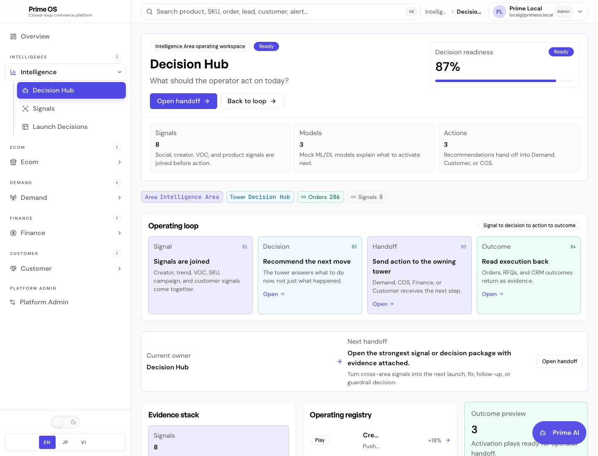
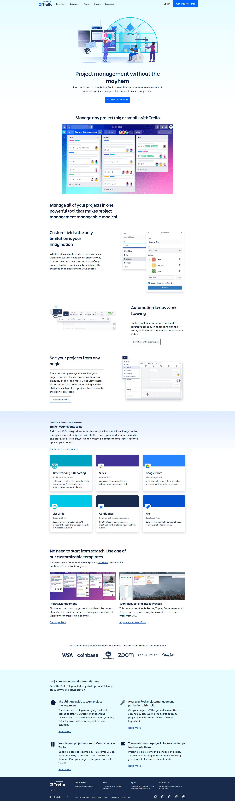
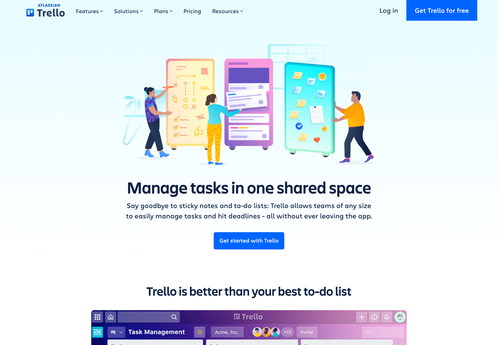
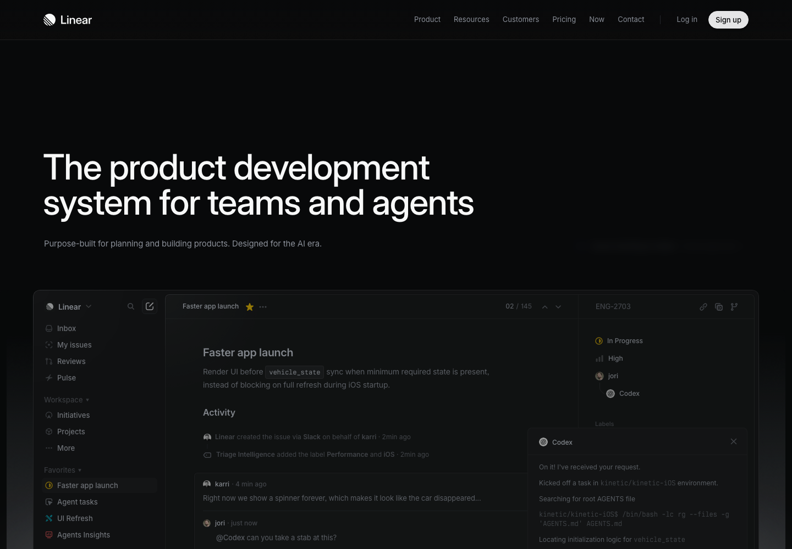
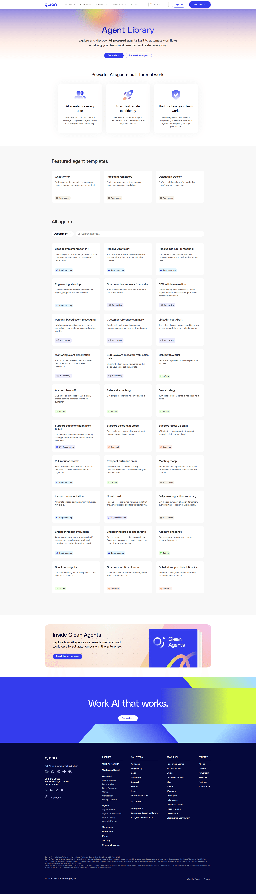
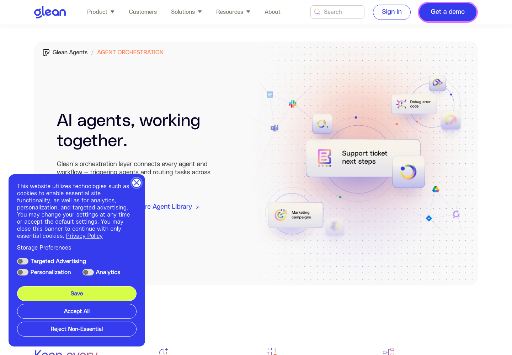
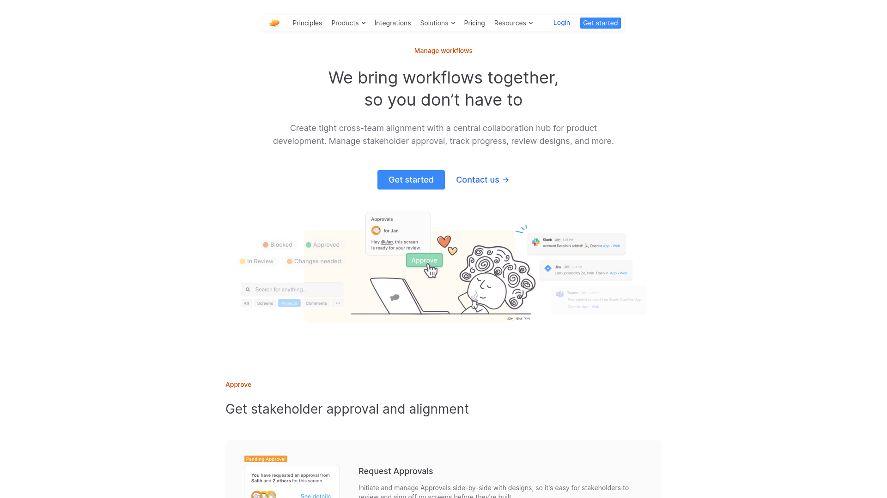
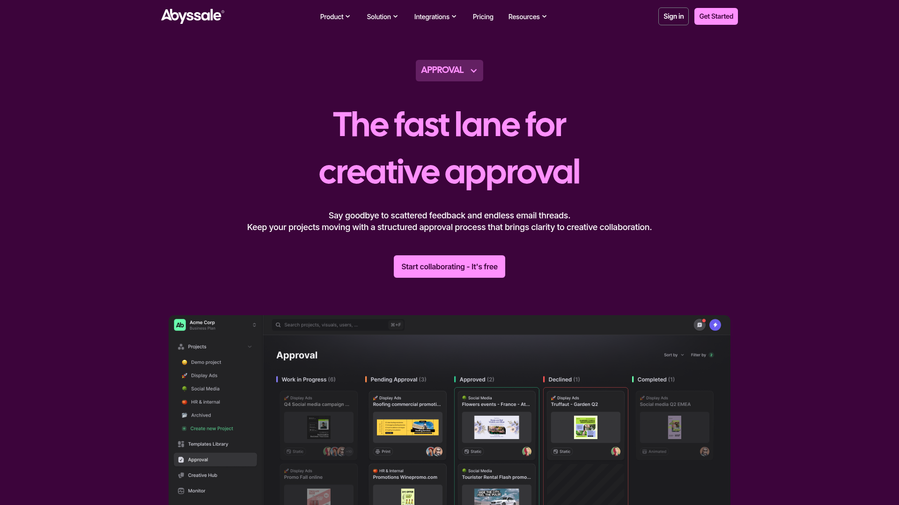
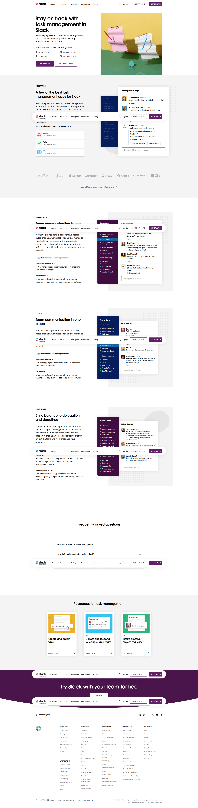
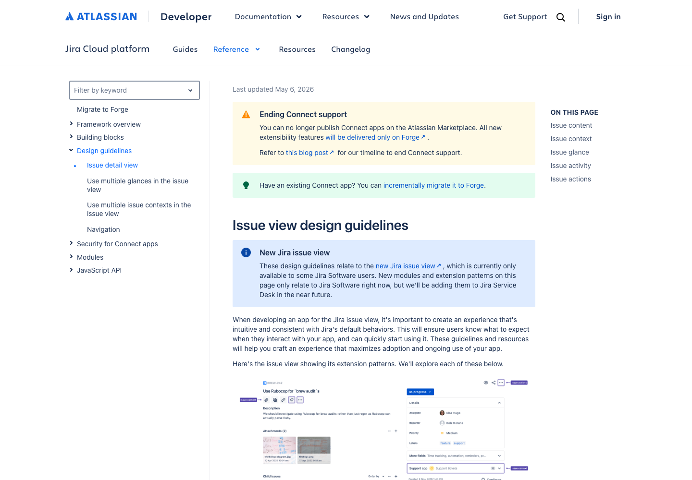

Design Research: Intelligence Agent Board Workspace
TL;DR
Nên thiết kế `Intelligence Area` như một **agent work board**, gần Jira/Trello/Linear hơn dashboard BI. Board không chỉ là Kanban trang trí; mỗi card phải là một `DecisionPackage` có agent owner, evidence, confidence, risk, next Demand action, handoff status. Pattern mạnh nhất cho Prime OS: **left agent/status rail + center board/list + right evidence drawer + bottom action rail**.
Current State

Prime OS current Intelligence state: nhiều dashboard/card giúp nhìn tổng quan, nhưng chưa đủ mạnh như một nơi agent làm việc, báo cáo, review, rồi đẩy dữ liệu sang Demand.
Recommendations / Next Steps
1. Build `Intelligence Workspace` as Board-first, not Dashboard-first
Use board/list lanes inspired by Jira/Trello, but adapt lane meaning for Intelligence:
Each card is not a generic task. Each card is a **DecisionPackage**.
┌───────────────────────────────────────────────────────────────────────┐ │ Intelligence Workspace Ready 6 | Blocked 2 │ ├───────────────┬───────────────┬───────────────┬───────────────┬───────┤ │ Running │ Needs Review │ Ready Demand │ Sent Demand │Learned│ │ ┌───────────┐ │ ┌───────────┐ │ ┌───────────┐ │ ┌───────────┐ │ ... │ │ │Agent run │ │ │Finding │ │ │DecisionPkg│ │ │Campaign │ │ │ │ │Market │ │ │Persona │ │ │Sendable │ │ │accepted │ │ │ │ │52% conf │ │ │Evidence 4 │ │ │Impact ¥ │ │ │Readback │ │ │ │ └───────────┘ │ └───────────┘ │ └───────────┘ │ └───────────┘ │ │ └───────────────┴───────────────┴───────────────┴───────────────┴───────┘
Why: Trello/Jira boards work because they represent state transition. Intelligence needs exactly that: raw signal → agent work → reviewed decision → Demand handoff → learning.
2. Add Right Evidence Drawer For Trust
Clicking any board card should open a side drawer. Do not expand huge cards inline.
Drawer sections:
┌──────────────────────── Board ────────────────────────┬───────────────┐ │ [Needs Review] [Ready for Demand] [Sent] │ Evidence │ │ │ Finding │ │ ┌ Decision card ┐ │ Confidence 86 │ │ │ Market signal │ selected │ Sources 5 │ │ │ Demand action │ ───────────────────────────────────▶│ Guardrail ATS │ │ └───────────────┘ │ Payload │ │ │ [Send Demand] │ └───────────────────────────────────────────────────────┴───────────────┘
Why: AI/agent trust comes from visible proof, not from prettier charts.
3. Keep Agent Runs Visible As Workers, Not Hidden Automation
Use a left rail or top strip showing agent work:
Each agent chip should show:
┌───────────────┐ │ Agent Runs │ │ ● Market │ Running 2m │ ● Persona │ Ready 3 │ ● Message │ Review 1 │ ● Risk │ Blocked stock └───────────────┘
Why: Glean/Linear-like agent patterns make AI work inspectable. Prime OS should not make agent output feel like black-box dashboard magic.
4. Use `DecisionPackage` Cards, Not Generic Task Cards
Card anatomy:
┌────────────────────────────────┐ │ Ready for Demand 86% │ │ Launch refill bundle campaign │ │ Signal: VOC + creator + orders │ │ Impact: +18% projected lift │ │ Risk: ATS low │ │ Owner: Demand Campaign Ops │ │ [Evidence 5] [Send to Demand] │ └────────────────────────────────┘
Required card fields:
Why: Standard Kanban cards are too generic. Intelligence cards must encode business decision quality.
5. Add Sticky Action Rail For Operator Review
Actions should be stable and predictable:
┌─────────────────────────────────────────────────────────────┐ │ Selected: Launch refill bundle campaign │ │ [Approve] [Ask Agent] [Request Data] [Send to Demand] │ └─────────────────────────────────────────────────────────────┘
Why: Board UIs often hide actions in cards. Prime OS needs action discipline: agent recommends, operator reviews, Demand executes.
6. Make Demand Handoff A Lane And A Detail Object
Do not make “Send to Demand” only a link. It should create a visible state transition:
Ready for Demand → Sent to Demand → Accepted by Demand → Outcome Learned
Handoff payload preview:
Why: This is the business bridge between Intelligence and Demand.
Key Examples
Trello — Board Mental Model

Trello — Kanban board/list metaphor for moving work through state. Useful for Intelligence package state transitions. [Lazyweb]

Trello live capture — task management page showing boards/lists/cards as the main working mental model. [Web]
Linear — Agent + Team Work System

Linear — product system for teams and AI agents; useful pattern for making agent output reviewable inside work tracking. [Lazyweb]

Linear live capture — dense, dark, work-forward product UI; good reference for compact rows, status, and agent/team work tone. [Web]
Glean — Agent Library / Orchestration

Glean — searchable/filterable agent cards; useful for Prime OS agent lane design and agent capability discovery. [Lazyweb]

Glean live capture — agent orchestration narrative; useful for modeling multiple specialist agents producing coordinated outputs. [Web]
Zeplin — Approval Workflow

Zeplin — approval workflow with assignee, due date, attachment, manage approvals. Good reference for operator approval before handoff. [Lazyweb]
Abyssale — Approval Project Cards

Abyssale — project cards with status in an approval workflow. Useful for `Needs Review` and `Ready for Demand` lanes. [Lazyweb]
Slack / Atlassian — Work Coordination

Slack — task updates embedded in communication context; useful for agent comments and operator questions. [Lazyweb]

Atlassian live capture — issue/detail view model; useful for right-side detail panel and evidence/action context. [Web]
Patterns
Pattern 1 — State Lanes Beat Category Tabs
Good board apps use state lanes:
Prime OS equivalent:
This is better than tabs like `VOC`, `Forecasting`, `Attribution`, because operator wants state of decision, not data category.
Pattern 2 — Cards Need Just Enough Metadata
Best cards show enough to decide whether to open:
Prime OS cards need:
Pattern 3 — Detail Panel Prevents Board Clutter
Board should stay compact. Deep evidence belongs in drawer.
Use drawer for:
Pattern 4 — Approval Is A Separate Moment
Approval workflows show a clear review step. Prime OS should copy this.
Bad:
Agent says → Send immediately
Good:
Agent says → Operator reviews evidence → Approves handoff → Demand accepts
Pattern 5 — Agent Visibility Matters
AI-agent UIs that work show:
Prime OS should expose agent state as first-class UI.
Anti-Patterns
Anti-Pattern 1 — KPI Dashboard Wall
A dashboard wall makes Intelligence passive. It shows information but does not move work.
Avoid:
Anti-Pattern 2 — Category-Only Navigation
Tabs like `VOC`, `Attribution`, `Forecasting`, `Creators` make the product feel like separate tools.
Better:
Anti-Pattern 3 — Black-Box Agent Output
If the UI only shows final recommendation, operator will not trust it.
Need:
Anti-Pattern 4 — Handoff As Link Only
A link to Demand is not a handoff.
A real handoff needs:
Unique Angles
Trello Angle — Board As Shared Truth
Trello’s power is not complex UI; it is shared state. Prime OS can use this by making the board the source of operational decision state.
Linear Angle — AI Output Is Reviewed Work
Linear frames AI/agent output as something teams review and move forward. This maps strongly to Intelligence agent reports.
Glean Angle — Agent Capabilities Are Discoverable
Glean shows agents as cards with search/filter. Prime OS can show agent lanes as business capabilities: Market Scout, Persona Analyst, Message Strategist, Launch Risk Analyst.
Zeplin/Abyssale Angle — Approval Is A Workflow Object
Approval UI makes human sign-off explicit. Prime OS needs this because Intelligence should not mutate Demand directly.
Recommended Prime OS Board Model
Top Header
┌──────────────────────────────────────────────────────┐ │ Intelligence Workspace │ │ Running 4 | Needs review 3 | Ready Demand 6 | Blocked 2│ └──────────────────────────────────────────────────────┘
Main Layout
┌───────────────┬───────────────────────────────────────┬──────────────────┐ │ Agent Runs │ Decision Board │ Evidence Drawer │ │ │ │ │ │ Market Scout │ Running | Review | Ready | Sent │ Finding │ │ Persona │ │ Evidence │ │ Message │ [DecisionPackage cards...] │ Confidence │ │ Risk │ │ Payload │ └───────────────┴───────────────────────────────────────┴──────────────────┘
Card Design
┌─────────────────────────────┐ │ READY FOR DEMAND 86% │ │ Refill bundle launch route │ │ VOC + creator + orders │ │ Impact: +18% lift │ │ Risk: Stock watch │ │ Owner: Demand Campaign Ops │ │ [Evidence 5] [Send] │ └─────────────────────────────┘
Detail Drawer
┌─────────────────────────────┐ │ Evidence │ │ Source: TikTok comments │ │ Freshness: 12m │ │ Confidence: 86% │ │ Guardrail: 20 ATS / 207 fc │ │ Rejected: broad discount │ │ │ │ Demand Payload │ │ Objective: launch campaign │ │ Audience: repeat buyers │ │ CTA: request quote │ │ [Send to Demand] │ └─────────────────────────────┘
Findings
1. Jira/Trello Board Pattern Fits Intelligence If Lanes Are Business States
A simple Kanban board works only if lanes reflect meaningful workflow states. For Prime OS, states should not be generic `Todo/In Progress/Done`. They should represent the Intelligence-to-Demand lifecycle.
Recommended lanes:
2. Board Cards Must Encode Decision Quality
Generic cards are too weak. Prime OS card must show decision quality:
This turns board from task tracker into decision-support workspace.
3. Evidence Drawer Is Non-Negotiable
Agent recommendations need explainability. A right drawer keeps board compact while allowing deep proof.
The drawer should be the main trust surface.
4. Approval Flow Should Be First-Class
The user’s idea says agents work and report, then data goes to Demand. That implies approval step.
Therefore `Needs Review` and `Ready for Demand` should be core lanes.
5. Demand Handoff Must Be Visible On The Board
After sending, card should move to `Sent to Demand`, then update to `Accepted`, `Rejected`, or `Outcome Learned`.
This makes closed-loop Prime OS visible.
Sources
Lazyweb Screenshots
Web Sources / Captures
Final Recommendation
For Prime OS Intelligence, use a **hybrid Jira/Trello/Linear-style board**:
Build the V1 screen as:
Agent rail + DecisionPackage board + Evidence drawer + sticky handoff action rail
This best matches the product thesis: Intelligence agents work, report, get reviewed, and pass structured data into Demand.